1과목: 산업안전보건법령
1. 산업안전보건법령상 용어에 관한 설명으로 옳지 않은 것은?
2. 산업안전보건법령상 산업재해 중 중대재해에 해당하는 것을 모두 고른 것은?
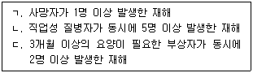
3. 산업안전보건법령상 산업재해 발생건수 등의 공표대상 사업장이 아닌 것은?
4. 산업안전보건법령상 안전보건관리책임자에 관한 설명으로 옳은 것은?
5. 산업안전보건법령상 산업안전보건위원회에 관한 설명으로 옳은 것은?
6. 산업안전보건법령상 관계수급인 근로자가 도급인의 사업장에서 작업을 하는 경우 도급인이 이행하여야 할 사항이 아닌 것은?
7. 산업안전보건법령상 도급인과 수급인을 구성원으로 하는 안전 및 보건에 관한 협의체에 관한 설명으로 옳은 것은?
8. 산업안전보건법령상 안전관리전문기관 또는 보건관리전문기관의 지정을 취소하여야 하는 경우는?
9. 산업안전보건법령상 안전보건교육에 관한 설명으로 옳지 않은 것은?
10. 산업안전보건법령상 안전보건교육기관에 관한 설명으로 옳은 것은?
11. 산업안전보건법령상 유해·위험 방지를 위한 방호조치가 필요한 기계·기구가 아닌 것은?
12. 산업안전보건법령상 '대여자 등이 안전조치 등을 해야 하는 기계·기구·설비 및 건축물 등'에 해당하는 것을 모두 고른 것은? (단, 고용노동부장관이 정하여 고시하는 기계·기구·설비 및 건축물 등은 고려하지 않음)
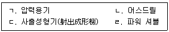
13. 산업안전보건법령상 유해성·위험성 조사 제외 화학물질이 아닌 것은? (단, 고용노동부장관이 공표하거나 고시하는 물질은 고려하지 않음)
14. 산업안전보건법령상 유해인자의 유해성·위험성 분류기준 중 물리적 위험성 분류기준에 관한 설명으로 옳지 않은 것은?
15. 산업안전보건법령상 자율안전확인에 관한 설명으로 옳지 않은 것은?
16. 산업안전보건법령상 안전인증에 관한 설명으로 옳지 않은 것은?
17. 산업안전보건법령상 안전검사대상기계등에 대한 안전검사를 면제할 수 있는 경우를 모두 고른 것은?
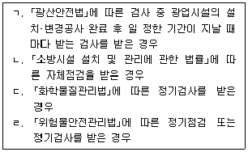
18. 산업안전보건법령상 작업환경측정 및 작업환경측정기관에 관한 설명으로 옳은 것은?
19. 산업안전보건법령상 상시근로자 수 300명 이상의 사업 중 안전보건관리규정을 작성해야 하는 사업이 아닌 것은?
20. 특수건강진단의 시기 및 주기에 관한 산업안전보건법 시행규칙 [별표 23]의 일부이다. ( )에 들어갈 숫자로 옳은 것은? (단, 특수건강진단 주기의 예외 규정은 고려하지 않음)
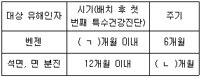
21. 산업안전보건법령상 작업환경측정 또는 건강진단의 실시 결과만으로 직업성 질환에 걸렸는지를 판단하기 곤란한 근로자의 질병에 대하여 한국산업안전 보건공단에 역학조사를 요청할 수 있는 자로 규정되어 있지 않은 자는?
22. 산업안전보건법령상 산업안전지도사(이하 '지도사'라 함)에 관한 설명으로 옳지 않은 것은?
23. 산업안전보건법령상 질병자의 근로 금지·제한 및 유해·위험작업에 대한 근로 시간 제한에 관한 설명으로 옳은 것을 모두 고른 것은?
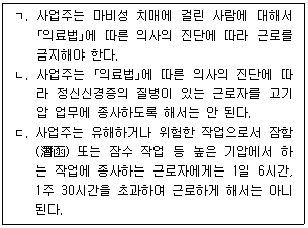
24. 산업안전보건법령상 공정안전보고서에 포함해야 할 비상조치계획의 세부 내용으로 규정된 것은?
25. 산업안전보건법령상 위반행위에 대한 과태료 금액이 다른 하나는? (단, 가중 및 감경규정은 고려하지 않음)
2과목: 산업보건일반
26. 고용노동부 고시에서 규정하는 “용접흄 및 분진”에 관한 설명으로 옳지 않은 것은?
27. 작업장에서의 소음측정 및 평가방법 지침상 누적소음노출량 측정기에 의한 작업환경측정에 관한 설명으로 옳지 않은 것은?
28. 베르누이 정리에 따른 속도압에 관한 설명으로 옳은 것은?
29. 산업안전보건기준에 관한 규칙상 온도·습도에 의한 건강장해의 예방에 관한 설명으로 옳지 않은 것은?
30. 석면 해체·제거 작업 지침상 음압기와 음압기록장치에 관한 설명으로 옳지 않은 것은?
31. 우리나라에서 발생한 급성 중독 사례이다. 해당 화학물질로 옳은 것은?
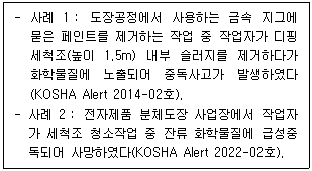
32. 고용노동부 고시에서 제시하는 건강장해 예방을 위한 국소배기장치 안전검사 대상 유해화학물질로 옳은 것은?
33. 근로자건강진단 실무지침에 따른 생물학적 노출지표의 검사방법으로 옳은 것은?
34. 작업환경측정·분석 기술지침에 따라 초산(Acetic acid)에 대한 측정을 실시 하였을 때, 시료채취에 사용할 흡착관으로 옳은 것은?
35. 원심형 송풍기(centrifugal fan)에 해당하지 않는 것은?
36. 소음의 특수건강진단 및 청력보존프로그램에 관한 설명으로 옳지 않은 것은?
37. 다음 중 화학적 질식제에 해당하는 것은?
38. 근골격계부담작업 및 유해요인조사에 관한 설명으로 옳은 것은?
39. 고용노동부 고시에서 제시하는 방진마스크 여과재의 포집효율에 관한 시험 성능기준으로 옳은 것은?
40. 화학물질의 분류·표시 및 물질안전보건자료에 관한 기준에 따른 경고표지 작성시 옳지 않은 것은?
41. 중추신경에 주요 건강장해를 일으키는 유기화합물질이 아닌 것은?(문제 오류로 확정답안 발표시 모두 정답처리 되었습니다. 여기서는 1번을 누르면 정답 처리 됩니다.)
42. 산업재해의 재해손실 비용 산정시 직접비와 간접비의 비율로 옳은 것은?
43. 화학물질 및 물리적인자의 노출기준에서 벤젠의 정보물질 표기에 관한 내용으로 옳은 것을 모두 고른 것은?
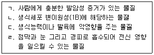
44. 2023년 산업재해 현황에서 제조업 중 재해자수가 가장 많은 업종과 재해율이 가장 높은 업종으로 묶은 것은?
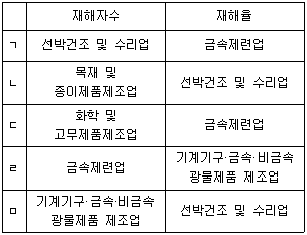
45. 국내의 산업보건 역사에 관한 내용으로 옳은 것을 모두 고른 것은?
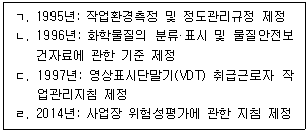
46. 근로자건강진단 실무지침에서 인체에 미치는 영향이 “접촉성 피부염, 비중격 점막의 괴사, 다발성 신경염 등”으로 기술된 물질은?
47. 역학에 관한 설명으로 옳지 않은 것은?
48. 피로의 기여요인 중 작업관련 요인으로 옳지 않은 것은?
49. 야간작업으로 인한 수면장애 근로자의 작업환경 관리에 관한 지침의 내용으로 옳지 않은 것은?
50. 청력보호구의 착용방법 및 관리에 관한 지침의 내용으로 옳지 않은 것은?
3과목: 기업진단 · 지도
51. 해크만과 올드햄(J. Hackman & G. Oldham)이 제시한 직무특성모형에서 작업성과에 대한 경험적 책임(experienced responsibility)에 영향을 미치는 핵심직무차원은?
52. 인력의 수요와 공급을 예측하는 기법들 중에서 수요예측 기법을 모두 고른 것은?
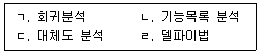
53. 단체교섭의 유형 중 특정 기업 또는 사업장 단위로 조직된 노동조합이 해당 기업의 사용자 대표와 교섭하는 것은?
54. 민쯔버그(H. Mintzberg)가 제시한 조직의 5가지 구성부문(parts)으로 옳지 않은 것은?
55. 피들러(F. Fiedler)의 상황적합이론에 관한 설명으로 옳지 않은 것은?
56. 수요예측 기법에 관한 설명으로 옳지 않은 것은?
57. 자재소요계획(material requirement planning)의 입력 자료를 모두 고른 것은?
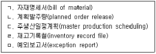
58. 6시그마에 관한 설명으로 옳지 않은 것은?
59. 공급사슬관리에 관한 설명으로 옳은 것은?
60. 직업 스트레스 과정을 여러 개의 요소(facet)로 나눌 수 있다고 제안한 비어와 뉴먼(T. Beehr & J. Newman) 모델의 구성 요소가 아닌 것은?
61. 직무분석에서 사용하는 직위분석 설문지(Position Analysis Questionnaire)의 주요 차원이 아닌 것은?
62. 동기에 관한 이론적 접근 중에서 앨더퍼(C. alderfer)의 ERG 이론이 해당 되는 것은?
63. 다음의 설문 문항들이 측정하고자 하는 것은?
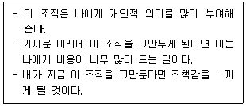
64. 다음 그림이 제시하는 집단효과성 모델은?
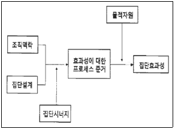
65. 제니스(I. Janis)가 제시한 집단사고(groupthink)가 발생할 가능성이 높은 상황을 모두 고른 것은?
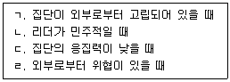
66. 위험감수성(Danger Sensitivity)에 영향을 미치는 주된 요인으로 옳지 않은 것은?(문제 오류로 확정답안 발표시 모두 정답처리 되었습니다. 여기서는 1번을 누르면 정답 처리 됩니다.)
67. 특정 상황과 부분적으로 결합되는 친근한 정보에 사로잡히면서 발생하는 인간 오류는?(문제 오류로 확정답안 발표시 1, 3, 5번이 정답처리 되었습니다. 여기서는 1번을 누르시면 정답 처리 됩니다.)
68. 노만(D. Norman)의 스키마 이론에서 실수(slip)의 기본적 분류에 해당하는 것을 모두 고른 것은?(문제 오류로 확정답안 발표시 2, 4번이 정답처리 되었습니다. 여기서는 2번을 누르시면 정답 처리 됩니다.)
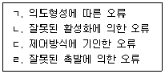
69. 안전관찰 훈련과정인 STOP(Safety Training Obsernation Program)을 순서대로 옳게 나열한 것은?
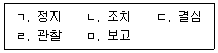
70. 다음 ( )에 들어갈 것으로 옳은 것은?
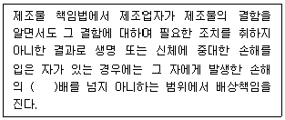
71. FMEA에서 고장의 발생확률을 β라 하고, β의 값이 0.10≤β＜1.00 일때 고장의 영향분류는?
72. 보호구 안전인증 고시에서 정하고 있는 중작업용 안전화의 정의에 관한 내용이다. ( )에 들어갈 것으로 옳은 것은?
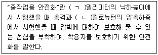
73. 산업안전보건기준에 관한 규칙상 전기 기계·기구에 대하여 누전에 의한 감전 위험을 방지하기 위하여 해당 전로의 정격에 적합하고 감도가 양호하며 확실하게 작동하는 감전방지용 누전차단기를 설치해야 하는 것이 아닌 것은?
74. 폭발을 기상폭발과 응상폭발로 분류하는 경우, 응상폭발에 해당하는 것을 모두 고른 것은?
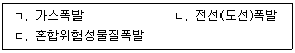
75. 산업안전보건기준에 관한 규칙상 기계의 원동기·회전축·기어·풀리·플라이휠·벨트 및 체인 등 근로자가 위험에 처할 우려가 있는 부위에 설치하는 위험 방지에 관한 설명으로 옳지 않은 것은?